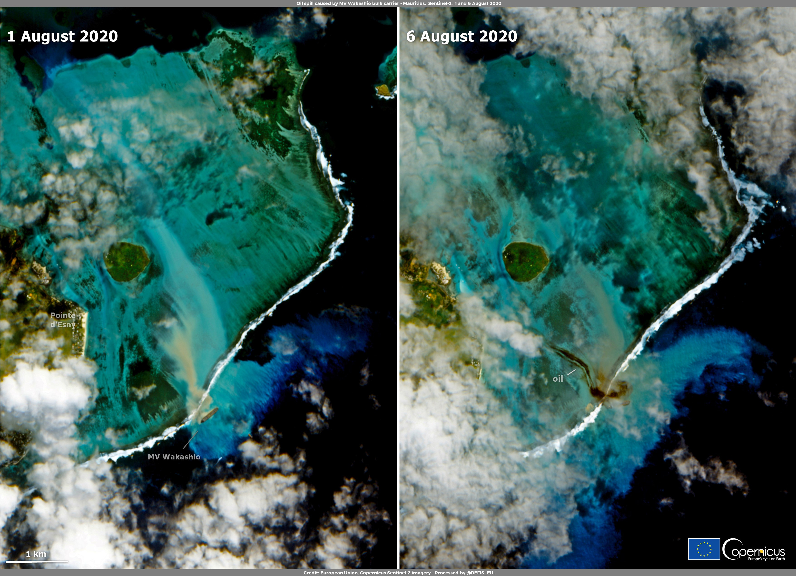

CASE EXERCISE · WHAT IS REAL, WHAT IS SIMULATED
Can one documented source stand out from plausible traffic?
The oil-spill image and MV Wakashio’s grounding position are historical. Two named offshore routes, the drift forcing and the scoring exercise are synthetic. Nothing here is presented as historical AIS or an independent verdict.
HISTORICAL IMAGE
The actual spill, before and after

OBSERVED · SENTINEL-21 August (left) / 6 August (right). The oil is visible near the stranded ship. This image was not produced by ESPADA.
Official fixed wreckSynthetic routeModelled originIllustrative oil point
03:00 UTC06:30 UTC
Inspect route waypoints and speeds
Source: European Union / Copernicus Sentinel-2. Image credit remains embedded in the original image.
HISTORICAL FACTSentinel-2 image + documented wreck position
MV Wakashio was grounded at the reef before the 6 August spill image.
CONTROLLED INPUTTwo fictional ships + wind/current vectors
Routes are geographically plausible exercise waypoints, not AIS observations.
COMPUTED OUTPUTOrigin estimate + comparative shortlist
Computed in this page from the stated assumptions; never a probability of guilt.